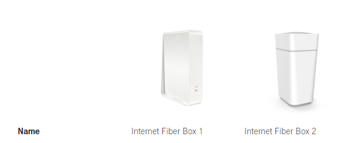

Hallo, ich besitze zurzeit die Magenta Box und würde gern an diese eine Fritzbox mit Mesh hängen. Nur stellt sich mir die Frage ich dies machen soll? Die Magenta Box muss in Bridge Modus sein wie ich gelesen habe. Die Fritzbox schließe ich direkt über ein LAN Kabel an die Magenta Box? Könnt ihr eine Fritzbox empfehlen? Liebe Grüße
vor 25 Minuten schrieb Harald Rinner:Hallo, ich besitze zurzeit die Magenta Box und würde gern an diese eine Fritzbox mit Mesh hängen. Nur stellt sich mir die Frage ich dies machen soll? Die Magenta Box muss in Bridge Modus sein wie ich gelesen habe. Die Fritzbox schließe ich direkt über ein LAN Kabel an die Magenta Box? Könnt ihr eine Fritzbox empfehlen? Liebe Grüße
Bridge Modus muss nicht sein, hat aber einige Vorteile. z.B. Portweiterleitungen nur auf einem Gerät, leichtere Konfiguration für Zugriff von außen, etc.
Bei Magenta können nur die Coax Kabel Boxen Fiber Box 1 (ehem. Connect Box) und Fiber Box 2 in den Bridge Mode versetzt werden (siehe Bild):

Dafür auf die Konfigurationsseite einsteigen und nachsehen, ob links auf der Seite die Option den Modus zu ändern angeführt ist.
Wenn ja, klicke darauf und du kannst dort vom Router Modus in den Modem Modus wechseln. Wenn nein, musst du über den Support den Anschluss auf IPv4 umstellen lassen, erst danach ist die Option verfügbar
Ich würde zur 7530 FRITZ!Box greifen, weil die günstig ist, aber auch sehr gut mit Updates versorgt wird. Die ist auch für diese Anwendung geeignet
Danke für die Antworten. Router befindet sich nun im Bridge Modus. Der Router 7530 besitzt keinen WAN Board und dieser wird doch für meine Anwendung benötigt oder? Dachte vom LAN Ausgang von der Magenta Box in den Router auf den WAN Eingang oder liege ich falsch?
Bei der lässt sich LAN 1 als WAN nutzen